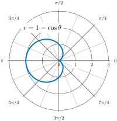

Section 9.4 Area and Arc Length in Polar Coordinates
Motivating Questions
How can we determine the area of a region described in polar coordinates?
How can we find the arc length of a polar curve?
In the rectangular coordinate system, the definite integral provides a way to calculate the area under a curve. In particular, if we have a function \(y=f(x)\) defined from \(x=a\) to \(x=b\) where \(f(x) > 0\) on this interval, the area between the curve and the \(x\)-axis is given by \(A=\int_a^b f(x) \ dx\text{.}\) This fact, along with the formula for evaluating this integral, is summarized in the Fundamental Theorem of Calculus. Similarly, the arc length of this curve is given by \(L = \int_a^b \sqrt{1+f'(x)^2} \ dx\text{.}\) In this section, we study analogous formulas for area and arc length in the polar coordinate system.
Preview Activity 9.4.1.
Areas of circular sectors and arc lengths of circles will be fundamental in finding areas and arc lengths of general regions described in polar coordinates.
-
From geometry, we know that for the sectors in Figure 9.4.1
\begin{equation*} \frac{\theta}{\theta_1} = \frac{s}{s_1}\text{.} \end{equation*}Determine the arc length \(s\) in terms of \(r\) and \(\theta\) by taking \(\theta_1\) to be \(1\) radian.
-
From geometry, we also know that for the sectors in Figure 9.4.1
\begin{equation*} \frac{\theta}{\theta_1} = \frac{A}{A_1}\text{.} \end{equation*}Determine the area \(A\) in terms of \(r\) and \(\theta\) by taking \(\theta_1\) to be \(2\pi\) radians.
Subsection 9.4.1 Areas of Regions Bounded by Polar Curves
In rectangular coordinates, we used a Riemann sum to approximate the area under a curve by using rectangles. For polar curves we use the Riemann sum again, but the rectangles are replaced by sectors of a circle (i.e. polar rectangles).
Consider a curve defined by the function \(r=f(\theta)\text{,}\) where \(\alpha \leq \theta \leq \beta\text{.}\) Our first step is to partition the interval \([\alpha, \beta]\) into \(n\) equal-width subintervals. The width of each subinterval is given by the formula \((\beta-\alpha)/n\text{,}\) and the \(i\)th partition point \(\theta_i\) is given by the formula \(\theta_i = \alpha + i\Delta \theta\text{.}\) Each partition point \(\theta = \theta_i\) defines a line with slope \(\tan \theta_i\) passing through the pole as shown in Figure 9.4.2.
The line segments are connected by arcs of constant radius. This defines sectors whose areas can be calculated by using a geometric formula. The area of each sector is then used to approximate the area between successive line segments. We then sum the areas of the sectors to approximate the total area. This approach gives a Riemann sum approximation for the total area. As found in Preview Activity 9.4.1, the area of a sector of a circle having central angle \(\theta\) and radius \(r\) is
Since the radius of a typical sector in Figure 9.4.2 is given by \(r_i=f(\theta_i)\text{,}\) the area of the \(i\)th sector is given by
Therefore a Riemann sum that approximates the area is given by
We take the limit as \(n \rightarrow \infty\) to get the exact area:
Area of a Region Bounded by a Polar Curve.
Suppose \(f\) is continuous and nonnegative on the interval \(\alpha \leq \theta \leq \beta\) with \(0 < \beta - \alpha \leq 2\pi\text{.}\) The area of the region bounded by the graph of \(r=f(\theta)\) between the radial lines \(\theta = \alpha\) and \(\theta = \beta\) is
Example 9.4.3. Finding an area of a polar region.
Find the area of one petal of the rose defined by the equation \(r=3\sin (2\theta)\text{.}\)
When \(\theta = 0\) we have \(r=3\sin (2\cdot 0) = 0\text{.}\) The next value for which \(r=0\) is \(\theta = \frac{\pi}{2}\text{.}\) This can be seen by solving the equation \(3\sin (2\theta)=0\) for \(\theta\text{.}\) Therefore the values \(\theta=0\) to \(\theta = \frac{\pi}{2}\) trace out the first petal of the rose. To find the area inside this petal, use equation (9.8) with \(f(\theta=3\sin (2\theta)\text{,}\) \(\alpha=0\text{,}\) and \(\beta=\frac{\pi}{2}\text{:}\)
Activity 9.4.2.
In this activity, we find the area outside the cardioid \(r=2+2\sin\theta\) and inside the circle \(r=6\sin\theta\)
-
Sketch a graph of both curves.

Figure 9.4.5. A polar grid. Determine the limits of integration for a definite integral giving the area between the two curves. That is, find their points of intersection by setting the two functions equal to each other and solving for \(\theta\text{.}\)
The area of the region bound by the two curves is the difference of two definite integrals. Calculate the value of each integral and then subtract to find the desired area.
The graph shows that there are actually three intersection points of these curves with third intersection point being at the origin. Explain why this intersection point did not show up as a solution in (b).
Subsection 9.4.2 Arc Length in Polar Curves
In rectangular coordinates, the arc length of a parameterized curve
is given by
In polar coordinates we define the curve by the equation \(r=f(\theta)\text{,}\) where \(\alpha \leq \theta \leq \beta\text{.}\) In order to adapt the arc length formula for a polar curve, we use the equations
and we replace the parameter \(t\) by \(\theta\text{.}\) Then
We replace \(dt\) by \(d\theta\text{,}\) and the lower and upper limits of integration are \(\alpha\) and \(\beta\) respectively. Then the arc length formula becomes
Arc Length of a Curve Defined by a Polar Function.
Let \(f\) be a function whose derivative is continuous on an interval \(\alpha \leq \theta \leq \beta\text{.}\) The length of the graph of \(r=f(\theta)\) from \(\theta = \alpha\) to \(\theta = \beta\) is
Example 9.4.7. Finding the arc length of a polar curve.
Find the arc length of the cardioid \(r=2+2\cos\theta\text{.}\)
When \(\theta = 0\text{,}\) \(r=2+2\cos(0)=4\text{.}\) Furthermore, as \(\theta\) goes from \(0\) to \(2\pi\text{,}\) the cardioid is traced out exactly once. Therefore these are the limits of integration. Using \(f(\theta)=2+2\cos\theta\text{,}\) \(\alpha=0\text{,}\) and \(\beta = 2\pi\text{,}\) equation (9.9) becomes
In the last step, we utilized WolframAlpha. However, we could have utilized trigonometric identities to find this solution as well.
Activity 9.4.3.
Suppose \(r=3\sin\theta\) for \(0 \leq \theta \leq \pi\text{.}\)
-
Sketch this curve.
Figure 9.4.9. A polar grid. Set up and evaluate an integral representing the arc length of this curve. Does your answer match what one would expect? Explain.
Set up and evaluate an integral representing the area inside this curve. Does your answer match what one would expect? Explain.
Activity 9.4.4.
Consider the curve \(r=1-2\cos\theta\) for \(0 \leq \theta \leq 2\pi\)m graphed in Figure 9.4.11.
At what point does this parameterized curve begin?
This curve intersects itself at the origin. At what values of the parameter \(\theta\) does this occur?
Give an expression that determines the area of the region enclosed by this curve but outside the inner loop. Suggestion: Use symmetry and focus on the region above the \(x\)-axis.
Subsection 9.4.3 Summary
Though care must be taken in determining the limits of integration, we have found formulas that compute
the area inside a polar curve.
the arc length of a curve described using polar coordinates.
Exercises 9.4.4 Exercises
1. Find area enclosed by a polar graph.
Find the area of the region bounded by \(r^{2} = 162 \cos 2 \theta\)
Answer:
2. Find another area enclosed by a polar graph.
Find the area of the region bounded by \(r = 10 - 2 \sin \theta\text{.}\)
Answer:
3. Find area inside one loop of a limacon.
Find the area inside the loop of the limacon given by \(r = 5 - 10 \sin \theta\)
Answer:
4. Find the length of a polar graph.
Find the length of the entire perimeter of the region inside \(r = 6 \sin \theta\) but outside \(r = 3\text{.}\)
Answer:
5. Find the length of another polar graph.
Find the length of the polar curve given by \(r = 4 e^{0.4 \theta}\) on the interval \(0 \leq \theta \leq \frac{1}{8}\text{.}\)
Answer:
6.
A polar curve \(r=f(\theta)\) can be written in parametric form
where we treat \(\theta\) as the parameter. The derivative is given by
Find the slope of the tangent line to \(r=\cos\theta\) at \(\left( 2, \frac{\pi}{3} \right)\text{.}\)
Find the slope of the tangent line to the polar curve \(r=\theta\) at the point given by \(\theta = \frac{\pi}{2}\text{.}\)
-
Find the points on the interval \(-\pi \leq \theta \leq \pi\) at which the cardioid \(r=1-\cos\theta\) has a vertical or horizontal tangent line.
Figure 9.4.12. The graph of cardioid \(r=1-\cos\theta\text{.}\)
7.
Find the points at which the following polar curves have a horizontal or vertical tangent line.
\(\displaystyle r^2 = 4\cos (2\theta)\)
The cardioid \(r = 1+\sin\theta\)
8.
Sketch the polar region described by the following integral expression for area: